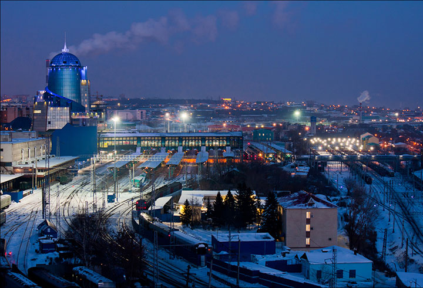
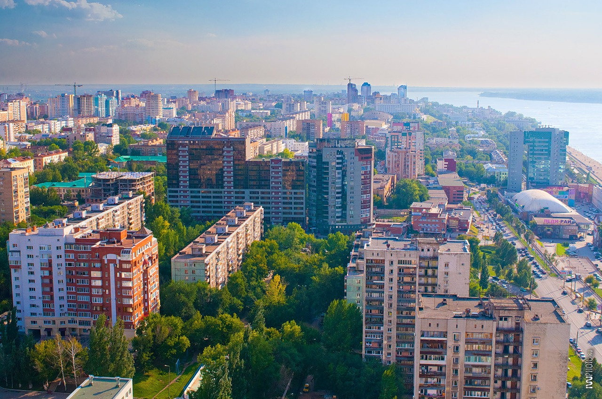
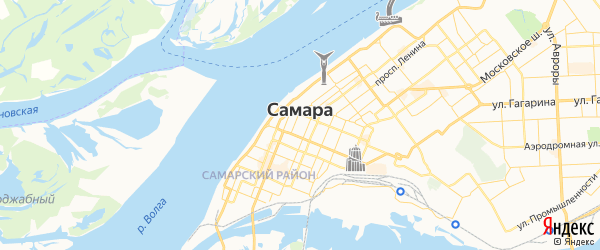

Самара

Сама́ра — город в Среднем Поволжье России, центр Поволжского экономического района и Самарской области, образует городской округ Самара. Город трудовой и боевой славы (2016). Население — 1 156 644 чел. (2019), девятый по численности населения город России. В пределах агломерации (третьей по численности населения в России) проживает свыше 2,7 млн человек.

Крупный экономический, транспортный, научно-образовательный и культурный центр. Самара также представляет собой крупный центр машиностроения и металлообработки, металлургии, нефтеперерабатывающей, пищевой, а также космической и авиационной промышленности. В городе располагается более 150 крупных и средних промышленных предприятий. В Самаре одна из самых длинных в России речных набережных и самое высокое здание железнодорожного вокзала в Европе. Кроме того, площадь им. Куйбышева является самой большой площадью в Европе. В 2018 году в городе были проведены матчи чемпионата мира по футболу.

Расположен на левом низменном берегу Саратовского водохранилища напротив Самарской Луки, при впадении в неё рек Самары (отсюда название города) и Сока. Впервые название реки Самары упоминается в записках секретаря арабского посольства и путешественника Ахмеда ибн Фадлана (921 год) как «Самур».